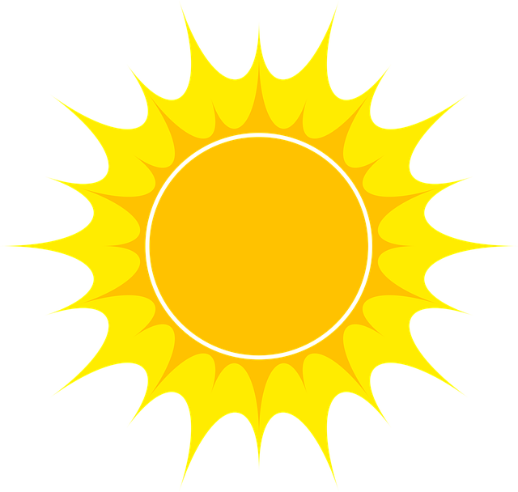

<ion-content>
  <div class="wrap">
    <h1>Pogoda w Krakowie</h1>

    <p>Temperatura: {{ data.main.temp }} °C</p>
    <p>Temperatura odczuwalna: {{ data.main.feels_like }} °C</p>
    <p>Ciśnienie atmosferyczne: {{ data.main.pressure }} hPa</p>

    
    
  </div>
</ion-content>
